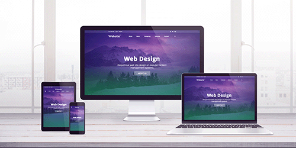
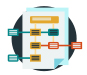
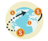

The right message brings the right people to act.
Donors give when they instantly understand what you do, who you serve, and why it matters. TCGrowth helps small nonprofits say that clearly, everywhere supporters find you: your website, social media, email and search.
How TCGrowth helps small nonprofits grow
Who We Work With
You have a strong mission, a small team, and big organizations competing for the same donors.
- Nonprofits under $1M in annual donations
- Committed to getting better together
- Ready to rethink what isn’t working in today's reality
Clarify Your Message
Why: Can a new donor tell, in 10 seconds, what you do and why it matters?
What you get:
- Your mission in one clear sentence
- Who you serve, and where
- What you deliver and the difference it makes
- How you stand out from larger organizations
Marketing Strategy
Why: Keep the donors you have and reach the ones you don’t.
What you get:
- Stories that build trust: sharing wins and challenges
- Social media, with AI tools that save hours each week
- Visibility in search and AI answers
- Tracking what works: analytics, UTM links and donations by channel
- Ideas from similar organizations, adapted to you

A Website That Works for You
Why: Refresh or rebuild? Your website the center of truth.
Designed by a certified web designer, built around your message:
- Easy navigation on any device
- Accessible colors, type and layout for every visitor
- Clear pages that turn visitors into donors and volunteers
- Found in searches like Google or ChatGPT (SEO and GEO)
Forms and Workflows That Save Time
Why: Less time on paperwork, more time on your mission.
- Donation and sign-up forms that are easy to find and complete
- Donor data captured once, stored safely, and actually used

Process maps that reveal tasks to automate
Dashboards for Better Decisions
Why: Show your board and donors the impact, in numbers.
- Track what matters with key performance indicators (KPIs)
- Turn raw data into clear insight

Dashboards for your board, staff and donors
Why TCGrowth
One partner for message, marketing, website and data.
- Marketing background Over 15 years helping organizations reach new audiences.
- Certified web designer Websites built for clarity, accessibility and action.
- Proven growth In business and nonprofit expansion.
Your Roadmap
Why: Clear phases, realistic timelines, no surprises.
- Discover – strengths, gaps: listen, challenge and asses
- Plan – detailed project plan and schedule
- Build – deliverables, testing, then launch
- Hand off – maintenance instructions and training
- Measure – track the impact
Let’s talk
Book a free 30-minute growth conversation.
Email to book a timeDebra Breed, TCGrowth, LLC tcgrowth@outlook.com
Slide 1 of 10
Select TCGrowth or press Esc to leave full screen